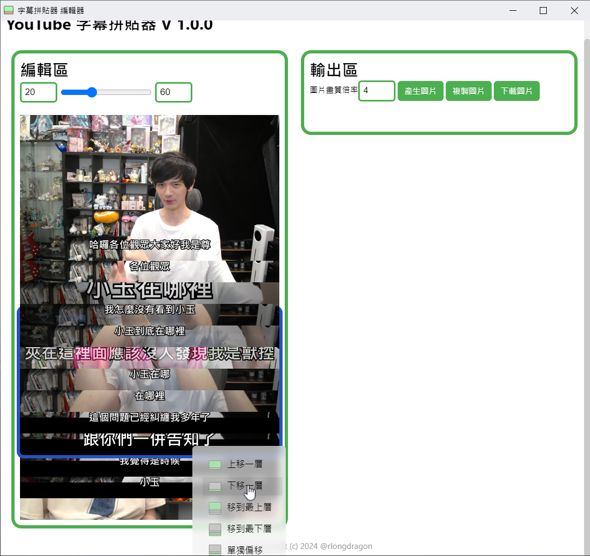

這個 Chrome Extension 可以讓您快速將 YouTube 影片片段和字幕拼貼成圖片。您可以輕鬆製作梗圖、分享精彩片段。它提供一鍵截取，讓您輕鬆製作完美的 YouTube 字幕截圖。
你可以在影片網站（YouTube、巴哈姆特動畫瘋）中開啟這個擴充功能
你可以看到兩個按鈕 擷取關鍵影格以及開啟編輯器，開始使用時請先按下開啟編輯器開啟如下圖的彈出視窗編輯器。
當你找到想記錄的關鍵幀按下擷取關鍵幀即可將該畫面加入至編輯器。
你也可以使用 預設
Alt(mac 為Option) +S快速擷取關鍵影格
當你選好圖片之後，可以用上方滑桿調整字幕與畫面下緣距離，滑桿左右兩輸入框是滑桿的最小以及最大值，可以調整兩數值來調正滑桿的精準度。20-60就足夠應付大部分的使用場景了。
如果你想對特定圖片進行操作（移動圖片層級、單獨設定偏移、刪除圖片等）可以對目標圖片按下右鍵。
此時會彈出右鍵選單，而被選中的圖片則會有藍色的外框。此時你可以使用右鍵選單來對圖片進行操作。
下面使用人生魯宅x尊-第2頻道 - YouTube 【尊】我找了小玉一起來看小玉梗圖...【第二頻道】 - YouTube 實際應用
首先，我已經捷好了一些圖片，並且已經調整好了字幕與畫面下緣距離。
我發現我第一張圖片不小心截到兩張了，我想要將第二張圖片刪除。
|
|
後來我發現，影片中是先講「我覺得是時候」才講「跟你們一並告知了」。
所以我需要將兩張圖片交換位置。
|  |
然後我發現影片中有些字幕大小比較大，那些圖片需要下移一點。
 |
下面還有幾張圖片也是要調整，這時我可以直接使用沿用上次設定值直接套用
 |
最後，最後一張圖片是需要完整顯示出來的，所以我使用露出整張圖片來調整。
 |
調整好後可以在輸出區按產生圖片，來渲染拼貼圖，並預覽。
渲染完後你可以直接使用複製圖片按鈕，快速將圖片複製到剪貼簿，或是使用下載圖片按鈕將圖片下載至本機。
特殊排版
兼容CC字幕
偵測CC字幕自動生成
本專案開發中，遇到Bug、意見回饋可不吝嗇開issus給我 :D
如果你覺得這個專案對你有幫助，歡迎給我一顆星星，這可以給我有很大的動力持續更新。